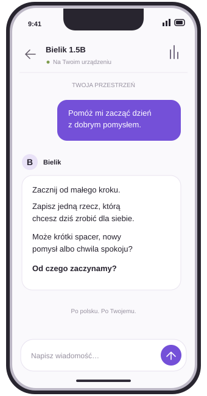
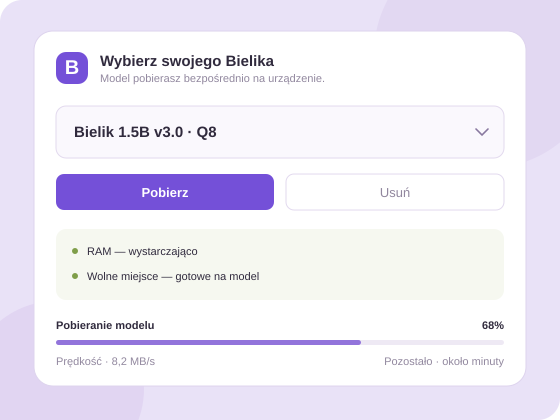
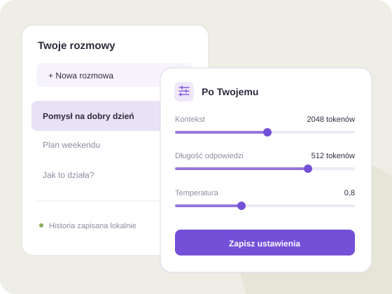

iOS
Twój Bielik, także na iPhonie.
ANDROID · DOSTĘPNY TERAZ
Polska AI, która mieszka
w Twoim telefonie.
Pobierz model raz. Rozmawiaj offline.
Bezpłatnie · bez konta · testowe APK

Mniej chmury.01 / DOBIERZ SWOJEGO BIELIKA
Bielik 1.5B lub 4.5B. Sprawdź RAM i miejsce,
pobierz model i zacznij rozmowę.

02 / PO TWOJEMU
Wracaj do zapisanych czatów.
Dopasuj kontekst, długość odpowiedzi i ustawienia modelu.

TO DOPIERO POCZĄTEK
Twój Bielik, także na iPhonie.
Więcej przestrzeni. Windows i Linux.
Dodawanie nowych modeli Bielika w aplikacji.
Wygodniejsza droga do kolejnych wersji.
ZACZNIJ NA ANDROIDZIE
Otwórz Releases → Assets → wybierz plik .apk.
Wersja testowa · Android ARM64 · modele pobierasz osobno w aplikacji.